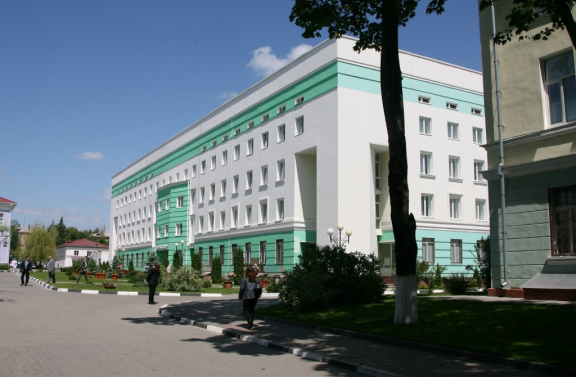
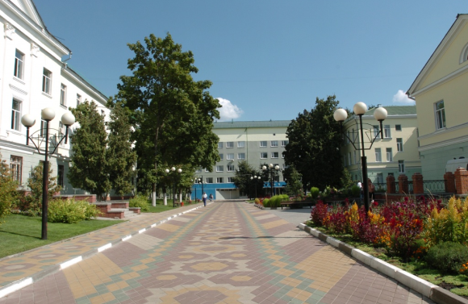

ОГБУЗ «Белгородская областная клиническая больница Святителя Иоасафа»
- врача ревматолога;
- врача пульмонолога;
- врача гастроэнтеролога;
- врача гематолога;
- врача нефролога;
- врача терапевта;
- врача кардиолога;
- врача невролога;
- врача эндокринолога;
- врача пропатолога;
- врача логопеда;
- врача диабетолога;
- врача мануальной терапии;
- врача психотерапевта;
- врача аллеролога;
- врача дерматвенолога;
- врача косметолога;
- врача оториноларинголога;
- врача кардиохирурга;
- врача хирурга;
- врача торакального хирурга;
- врача челюстно-лицевого хирурга;
- врача уролога;
- врача офтальмолога;
- врача сосудистого хирурга;
- врача травматолога-ортопеда;
- врача нейрохирурга;
- врача колопроктолога;
- врача акушера-гинеколога;
- врача сурдолога;
- врача сексолог;
- Гематологические исследования
- Общеклинические исследования
- Биохимические исследования
- Иммунологические исследования методом ИФА
Консультация специалиста терапевтического профиля
Консультация специалиста хирургического профиля
Манипуляции
Клинико-диагностические исследования
Режим работы
Поликлиника: с 08:00 до 15:30 (выходные: суббота, воскресенье).
Дневной стационар: с 09:00 до 18:00, без выходных.
Стационар: круглосуточно.
Консультативно-диагностическое отделение перинатального центра: с 08:00 до 18:00 (выходные: суббота, воскресенье).
Центр медицинской реабилитации: с 08:00 до 20:00 (выходные: суббота, воскресенье).


Контактная информация
ОГБУЗ «Белгородская областная клиническая больница Святителя Иоасафа»
ул. Некрасова 8/9, г. Белгород, Белгородская область, 308007.
Секретариат и приёмная главного врача:
Телефон: (4722) 50-49-59Факс: (4722) 26-78-50
E-mail: belokb@bokb.ru
Телефоны справочных:
Единая справочная: (4722) 50-48-48
Режим работы справочного бюро 8:00-17:00
Корпус №5 (терапия): (4722) 50-47-98
Корпус №9 (хирургия): (4722) 50-43-64
Корпус №4 (хирургия): (4722) 50-42-98
Корпус №8 (хирургия): (4722) 50-46-86
Гинекологический корпус: (4722) 50-40-79
Акушерский корпус: (4722) 50-40-92
Телефоны приемных отделений:
Корпус №5 (терапия): (4722) 50-47-70Корпус №8 (хирургия): (4722) 50-46-90
Корпус №9 (хирургия): (4722) 50-46-78
Акушерский санпропускник: (4722) 50-40-69
Гинекологический санпропускник: (4722) 50-40-78
Кардиохирургический центр: (4722) 50-48-37
Регистратура поликлиники:
Телефон: (4722) 50-48-48Регистратура
консультативно-диагностического
отделения перинатального центра:
Телефон: (4722) 50-40-31
Отдел платных медицинских услуг:
Кассы:
поликлиника: 50-46-98; 50-46-99; 50-44-94консультативно-диагностическое
отделение перинатального центра: 50-40-25
кардиохирургический центр: 50-41-96
корпус №5: 50-47-99
корпус №9: 50-42-99
Центр медицинской реабилитации: 54-56-65
Заведующая отдела платных медицинских услуг: 50-44-90
Отдел по работе с организациями и ДМС: 50-44-98; 50-44-95
Бухгалтерия отдела платных медицинских услуг: 50-49-13; 50-45-99
О больнице
Областная клиническая больница Святителя Иоасафа – ведущее лечебно-профилактическое
учреждение Белгородской области.
21 мая 1954 года областной Совет народных депутатов своим распоряжением № 219 утвердил открытие на базе Белгородской городской больницы областной больницы на 250 коек. Тогда в ней трудились 75 врачей и 125 медицинских работников среднего звена.
Сегодня областная клиническая больница Святителя Иоасафа - ведущее многопрофильное лечебно-профилактическое учреждение региона. В её состав входят: консультативная поликлиника на 600 посещений в смену, 23 специализированных отделения круглосуточного стационара на 1053 койки, перинатальный центр на 522 койки, центр медицинской реабилитации, диагностические и параклинические подразделения, отделение санитарной авиации, инженерные службы жизнеобеспечения больницы.
Ежегодно в больнице получают амбулаторно-поликлиническую и стационарную помощь свыше 170 тыс. жителей области, выполняется более 39 тыс. оперативных вмешательств, принимается свыше 5 тыс. родов.
В больнице работают 3056 сотрудников, в том числе 11 докторов и 85 кандидатов медицинских наук; 24 сотрудника удостоены высокого звания «Заслуженный врач РФ», 15 сотрудников стали победителями Всероссийского конкурса на звание лучшего врача года в различных номинациях. 45 врачей и 4 медицинские сестры награждены отраслевым знаком «Отличник здравоохранения», 255 врачей имеют высшую квалификационную категорию, 36 врачей являются главными внештатными специалистами области.
На базе больницы функционируют шесть кафедр медицинского института НИУ БелГУ.
Проводятся конференции и мастер-классы с участием сотрудников РНЦХ им. академика Б.В. Петровского, НЦСС им. А.Н. Бакулева, ФНЦ трансплантологии и искусственных органов им. В.И. Шумакова, практически всех ведущих специализированных центров России, а также Германии, Израиля, Японии, Словении, Сербии, Украины, Белоруссии.
За достигнутые успехи в эффективном решении социальных задач больница была удостоена третьего места в региональном этапе Всероссийского конкурса «Российская организация высокой специальной эффективности» в номинации «За развитие кадрового потенциала».

